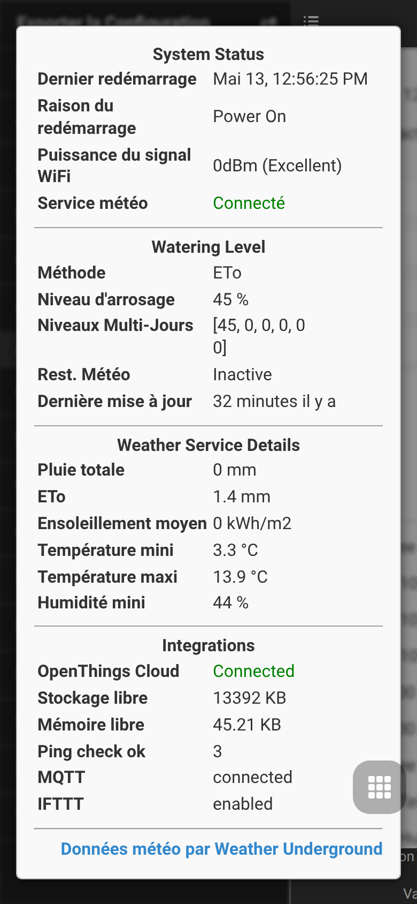

Serveur MCP — accès IA pour OpenSprinkler
L’intégration MCP (Model Context Protocol) permet à des assistants IA d’interroger et de piloter un contrôleur OpenSprinkler via des outils documentés.
Cette page couvre seulement la configuration MCP et les modes d’exécution. Les autres sujets sont séparés :
Modes de fonctionnement
MCP intégré au firmware
Le serveur MCP intégré fonctionne directement dans les firmwares ESP32 avec USE_OTF :
POST http://<controller-ip>/mcp
Content-Type: application/json
L’authentification utilise le même hash du mot de passe administrateur que l’API REST : ?pw=, en-tête X-OS-Password ou bearer token.
Disponibilité : ESP32 / ESP32-C5 uniquement avec USE_OTF; pas ESP8266 ni OSPi.
Serveur MCP Node.js externe
Le serveur externe dans tools/mcp-server/ tourne hors du firmware et publie l’API REST via stdio. Il fonctionne avec ESP8266, ESP32 et OSPi, avec des outils pour capteurs, monitors, Zigbee, BLE et ressources système lorsque le contrôleur les prend en charge.
Configuration
cd tools/mcp-server
npm install
npm run build
Exemple VS Code / GitHub Copilot :
{
"servers": {
"opensprinkler": {
"type": "stdio",
"command": "node",
"args": ["tools/mcp-server/dist/index.js"],
"env": {
"OS_BASE_URL": "http://<CONTROLLER-IP>",
"OS_PASSWORD_HASH": "<MD5-HASH>"
}
}
}
}
Calcul du hash :
echo -n "votre_mot_de_passe_admin" | md5sum | awk '{print $1}'
Vue des outils
| Domaine | Outils exemples |
|---|---|
| État contrôleur | get_all, get_controller_variables, get_options, get_debug, get_system_resources |
| Stations et programmes | get_stations, get_station_status, get_programs, manual_station_run, change_program |
| Capteurs et logs | get_sensors, get_sensor_values, get_sensor_log, backup_sensor_config |
| Radios OpenSprinklerPro | get_ieee802154_config, get_zigbee_devices, get_zigbee_status, get_ble_devices, get_rainmaker_status |
| Automatisation | list_adjustments, configure_adjustment, list_monitors, configure_monitor |
Le serveur MCP n’a pas d’écran UI propre. Pour le diagnostic local, utiliser Diagnostics du système.
